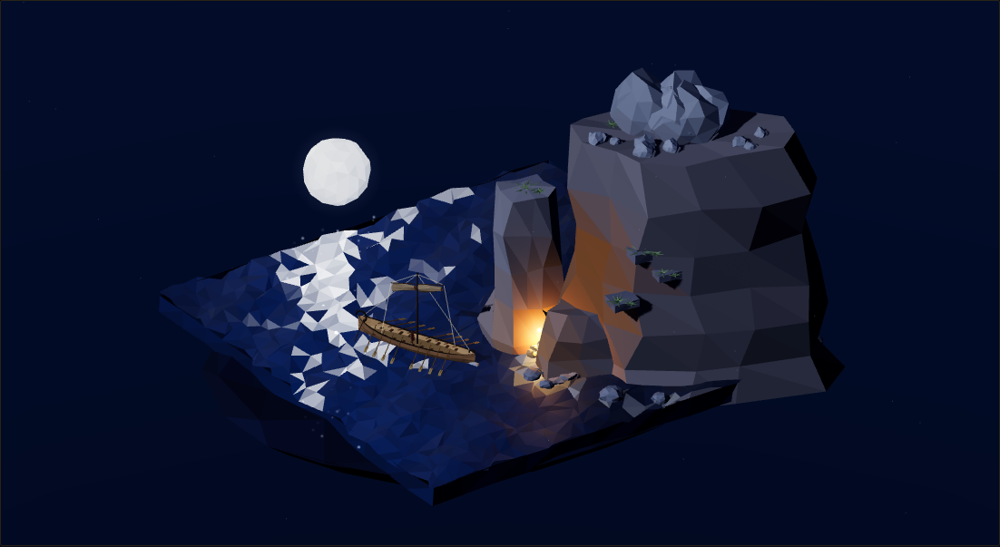
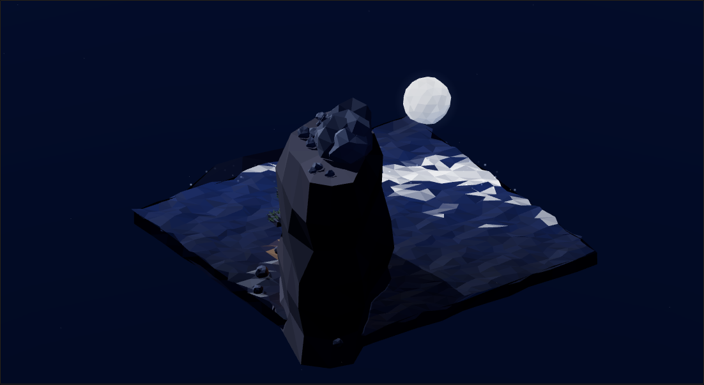
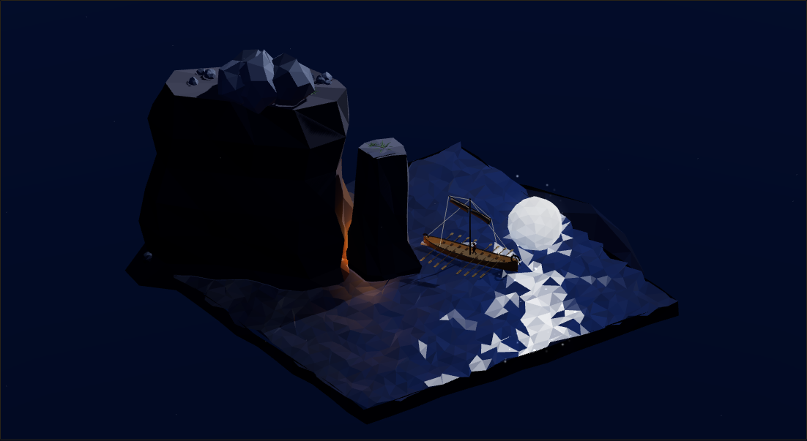
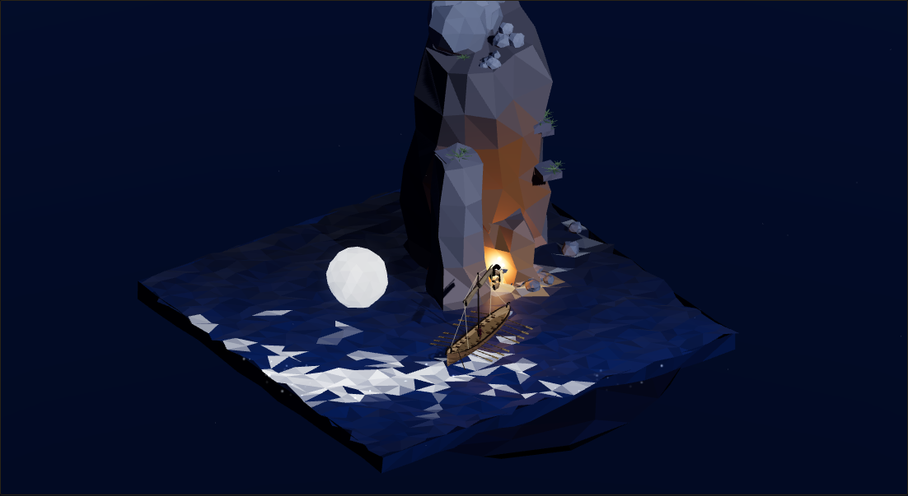
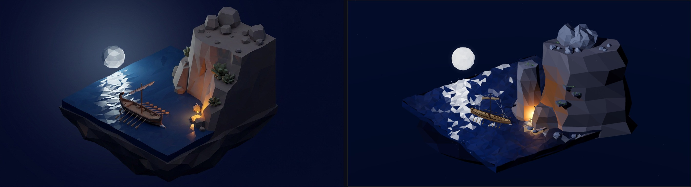

Beat VI as native geometry: the headland cliff with the ammunition boulders
piled at its brow, the cave-glow burning at the water line, open sea with the moonpath, the
prop moon, and the escape ship — the twenty-oarer of the ledger's own yardstick
(8 rowlocks a side painted → 15 m tip-to-tip, 12.7 px = 1 m) —
lofted hull, mast, raked yard with the furled sail, steering oar, thole pins, and
8 + 8 oars pulling a live row cycle. Twice a
cycle the blinded giant's rock arcs off the brow and lands in the strait: the splash is a
reusable seeded burst — splashAt(x,z) — droplets and
plume computed in the vertex shader as pure functions of (seed, sim-time). Ulysses paces the
port gangway at the stern, riding the ship's own sway, throwing a true moon shadow.
the book's framing · rocks fall on the ledger's own splash points
The low-poly register is the point. The sea plate is itself a faceted,
untextured render — so low-poly geometry IS the faithful reconstruction. Zero bound textures:
every surface is seeded facet jitter + palette. Deterministic throughout — one mulberry32
stream per system; the thrown rocks, their impact times and every splash droplet are pure
functions of sim-time, so any second of this scene replays byte-identically.
the turntable — 0° / 90° / 180° / 270°, no holes

0° — the book's frame

90° — behind the headland

180° — the open sea

270° — down the moonpath
against the painted plate

left: the painted sea plate · right: this scene, default framing.
Same floor plan, register, palette and light logic — moon high left, glow at the cliff base,
ship on the same ledger marks; the painterly plate keeps its hand-cut facet grain. Honest gap, stated.
Rebuilt through five gated passes — the pass log
(spec → blockout → structure → form → material → lighting, each pass rendered against the plate).